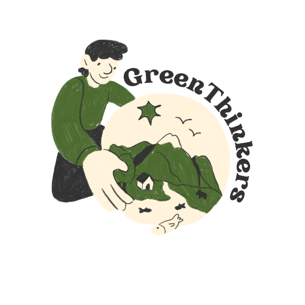
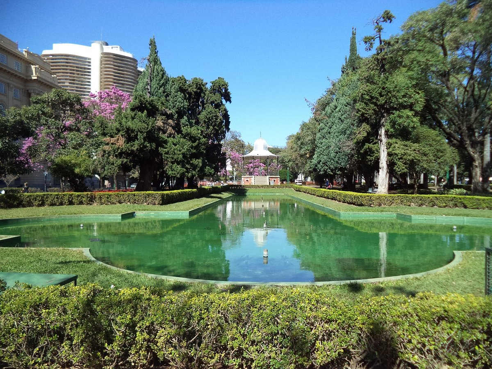

Quem Somos?
Este projeto visa a criação de uma plataforma web que
promove a inclusão, acessibilidade e o fortalecimento
do engajamento comunitário em prol de espaços
públicos verdes, seguros e sustentáveis.
A ideia central é utilizar a tecnologia para educar
e conscientizar as comunidades sobre a importância de
áreas verdes e práticas sustentáveis nas cidades, além
de incentivar a participação ativa em iniciativas locais.
Através da plataforma, usuários podem aprender,
colaborar e propor ações para melhorar a qualidade de
vida em suas cidades, contribuindo para a construção
de comunidades mais resilientes e preparadas para os
desafios do futuro.

promove a inclusão, acessibilidade e o fortalecimento
do engajamento comunitário em prol de espaços
públicos verdes, seguros e sustentáveis.
A ideia central é utilizar a tecnologia para educar
e conscientizar as comunidades sobre a importância de
áreas verdes e práticas sustentáveis nas cidades, além
de incentivar a participação ativa em iniciativas locais.
Através da plataforma, usuários podem aprender,
colaborar e propor ações para melhorar a qualidade de
vida em suas cidades, contribuindo para a construção
de comunidades mais resilientes e preparadas para os
desafios do futuro.

Por que ter conscientização?
A conscientização ambiental é essencial para promover um futuro mais
sustentável e saudável para todos. Envolve compreender como nossas ações
diárias impactam o meio ambiente e como pequenas mudanças podem fazer
uma grande diferença.
Manter espaços verdes bem cuidados é fundamental para a saúde ambiental e
o bem-estar da comunidade. Áreas verdes preservadas ajudam a reduzir a
poluição do ar, regulam a temperatura local, protegem a biodiversidade e
oferecem espaços de lazer e relaxamento.
